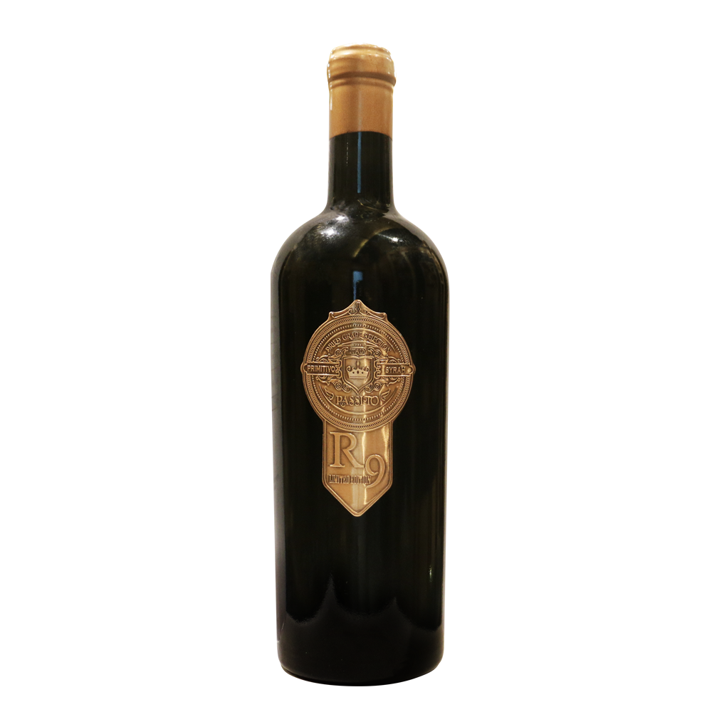

Hầm Vang Điện Ảnh 3D • Tuyển Chọn Nghệ Thuật
"Cấu trúc chắc chắn, hương quả mận chín, anh đào đen, sô-cô-la đen hòa quyện cùng gia vị nướng ấm áp của gỗ sồi lâu năm."
Mỗi giọt rượu là sự kết tinh của thời tiết, khoáng chất thổ nhưỡng và tay nghề bậc thầy làm vang. Bấm nốt hương để kích hoạt phản hồi xúc giác.

Toàn bộ 35 kiệt tác vang thượng hạng đã được khảo sát thực tế và lưu trữ toàn vẹn thuộc tính.
Chúng tôi không chỉ cung cấp rượu vang, mà mang đến trải nghiệm thưởng thức trọn vẹn từng khoảnh khắc.
Toàn bộ chai vang được lưu trữ trong hầm tối kiểm soát nhiệt độ và độ ẩm 24/7, giữ nguyên vẹn cấu trúc tannin và hương thơm nguyên bản.
Sommelier chuẩn bị decanter pha lê thổi thủng tay và ly Riedel cao cấp để rượu được thở hoàn hảo trước giờ khai tiệc của quý khách.
Đội ngũ chuyên trách giao tận nơi nội thành TP.HCM, Hà Nội và Đà Nẵng bằng túi giữ nhiệt chuyên dụng, sẵn sàng phục vụ tiệc ngay lập tức.
Phòng thử nếm Sommelier VIP tại 3 thành phố lớn sẵn sàng đón tiếp quý khách.
184–186 Lê Lai, Phường Bến Thành, Quận 1
Hotline: 0911 00 22 33
Giờ đón tiếp: 9:00 – 21:00 (Mỗi ngày)
Trung tâm Quận Hoàn Kiếm, TP. Hà Nội
Hotline: 0911 00 22 33
Giao hỏa tốc nội thành trong 2 giờ
Quận Hải Châu, TP. Đà Nẵng
Hotline: 0911 00 22 33
Cung cấp vang cho Resort & Khách sạn 5 sao